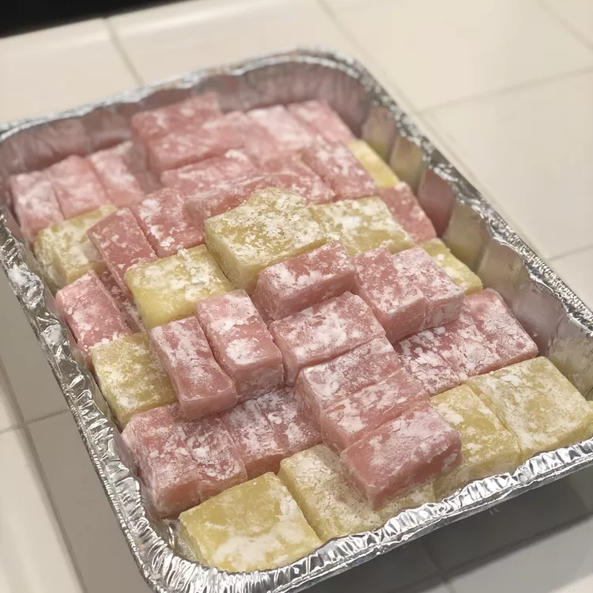

Chi Chi Dango

Description
Chi chi dango, a mochiko dessert confection, is a soft, chewy Japanese treat that is very similar in taste to mochi.
It's traditionally served at Girl's Day or Boy's Day celebrations.
It makes a great snack for picnics or parties.
This recipe is easy to make, but don't double the directions — follow them exactly as written.
Ingredients
- cooking spray
- 1 pound mochiko (glutinous rice flour)
- 2 1/2 cups white sugar
- 1 teaspoon baking powder
- 2 cups water
- 1 (14 ounce) can coconut milk
- 1 teaspoon vanilla extract
- 1/4 teaspoon red food color
- 1/4 cup potato starch, or as needed
Steps
-
Preheat the oven to 175 degrees Celsius.
Grease a 9x13-inch pan with cooking spray.
-
Whisk mochiko, sugar, and baking powder together in a bowl.
-
Combine water, coconut milk, vanilla, and food coloring in a medium bowl.
Blend in dry ingredients, then pour into the prepared pan. Cover with foil.
-
Bake in the preheated oven for 1 hour.
Remove from the oven and let cool completely, 30 minutes to 1 hour.
-
Dust a work surface with potato starch.
Invert the pan onto the work surface. Use a plastic knife to cut into 36 squares.